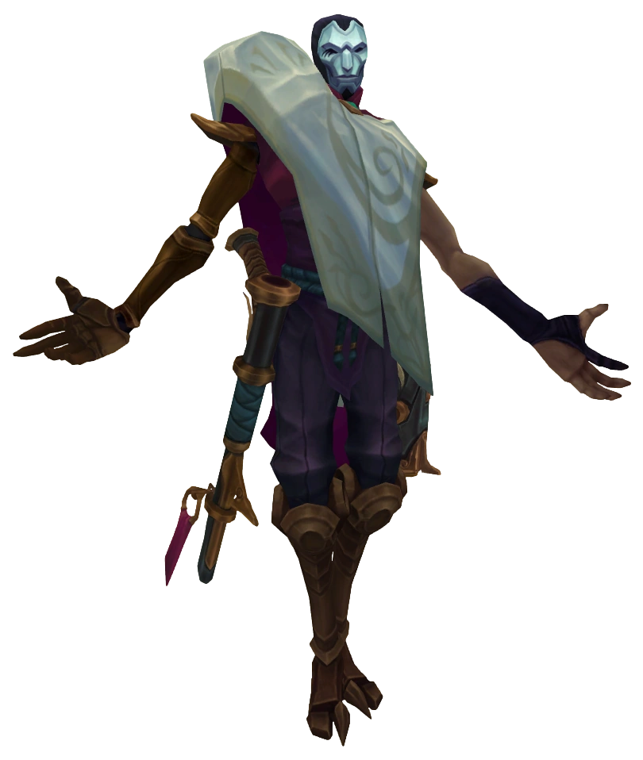

Jhin es un psicópata meticuloso que cree que el asesinato es un arte. Alguna vez un prisionero jonio, pero liberado por elementos sombríos dentro del concejo líder de Jonia, el asesino en serie ahora presta sus servicios como sicario a esa camarilla. Utilizando su arma como un pincel, Jhin crea obras de arte brutales que horrorizan a sus víctimas y testigos. Mostrar sus obras de horripilante drama le causa un placer retorcido, lo que lo convierte en la mejor opción para mandar el más poderoso de los mensajes: el terror.